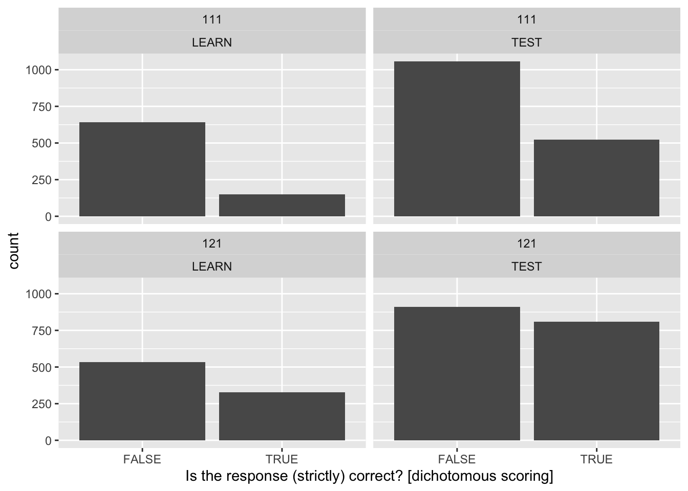
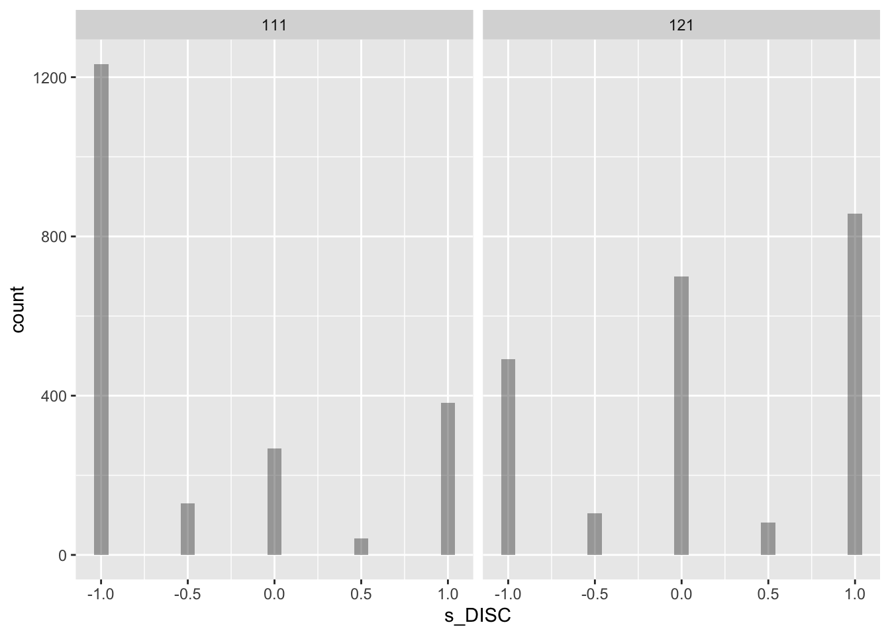
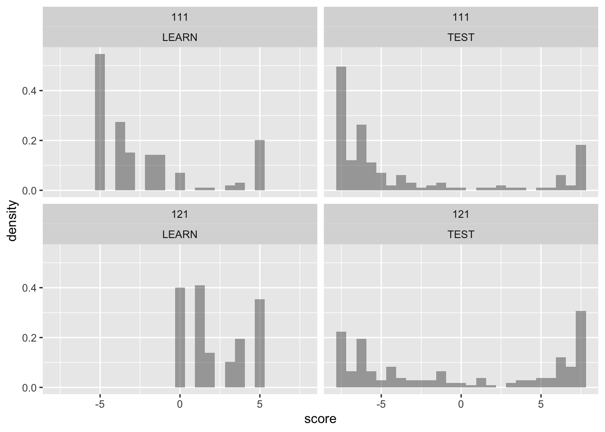

Show the code
#read datafiles, set mode and term
df_items <- read_rds('data/sgc3a_items.rds')SGC3A-2-Response Scoring
The purpose of this notebook is to score (assign a measure of accuracy) to response data for the SGC_3A study. This is required because the question type on the graph comprehension task used a ‘Multiple Answer Multiple Choice’ design (MCMA). Here, we evaluate different approaches to scoring MCMA questions, and transform raw question responses (e.g. boxes ABC are checked) to a measure of response accuracy. (Warning: this notebook takes several minutes to execute.)
| Pre-Requisite | Followed By |
|---|---|
| 1_sgc3a_harmonize.qmd | 3_sgc3A_descriptives.qmd |
#read datafiles, set mode and term
df_items <- read_rds('data/sgc3a_items.rds')The graph comprehension task of study SGC 3A presents readers with a graph, a question, and a series of checkboxes. Participants are instructed to use the graph to answer the question, and respond by selecting all the checkboxes that apply, where each checkbox corresponds to a datapoint in the graph.

In the psychological and education literatures on Tests & Measures, the format of this type of question is referred to as Multiple Choice Multiple Answer (MCMA) or Multiple Answer Multiple Choice (MAMC). It has a number of properties that make it different from traditional Single Answer Multiple Choice (SAMC) questions, where the respondent marks a single response from a number of options. In particular, there are a number of very different ways that MAMC questions can be scored.
In tranditional SAMC format questions, one point is given for selecting the option designated as correct, and zero points given for marking any of the alternative (i.e. distractor) options. Individual response options on MAMC questions, however might be partially correct (\(i\)), while responses on other answer options within the same item might be incorrect (\(n – i\)). In MAMC, it is not obvious how to allocate points when the respondent marks a true-correct option (i.e. options that should be selected), as well as one or more false-correct options (i.e. options that should not be selected). Should partial credit be awarded? If so, are options that respondents false-selected and false-unselected items equally penalized?
Schmidt et al. (2021) performed a systematic literature review of publications proposing MAMC (or equivalent) scoring schemes, ultimately synthesizing over 80 sources into 27 distinct scoring approaches. Upon reviewing the benefits of trade-offs of each approach, for this study we choose utilize two of the schemes: dichotomous scoring ( Schmidt et al. (2021) scheme #1), and partial scoring \([-1/q,0, +1/p]\) ( Schmidt et al. (2021) scheme #26), as well as a scaled discriminant score that leverages partial scoring to discriminate between strategy-specific patterns of response.
First, we note that the question type evaluated by Schmidt et al. (2021) is referred to as Multiple True-False (MTF), a variant of MAMC where respondents are presented with a question (stem) and series of response options with True/False (e.g. radio buttons) for each. Depending on the implementation of the underlying instrument, it may or may not be possible for respondents to not respond to a particular option (i.e. leave the item ‘blank’). Although MTF questions have a different underlying implementation (and potentially different psychometric properties) they are identical in their mathematical properties; that is, responses to a MAMC question of ‘select all that apply’ can be coded as a series of T/F responses to each response option

In this example (Figure 3.1), we see an example of a question with four response options (\(n=4\)) in each question type. In the SAMC approach (at left), there are four possible responses, given explicitly by the response options (respondent can select only one) \((\text{number of possible responses} = n)\). With only four possible responses, we cannot entirely discriminate between all combinations of the underlying response variants we might be interested in, and must always choose an ‘ideal subset’ of possible distractors to present as response options. In the MAMC (middle) and MTF (at right), the same number of response options (\(n=4\)) yield a much greater number \((\text{number of possible responses} = 2^{n})\). We can also see the equivalence between a MAMC and MTF format questions with the same response options. Options the respondent selects in MAMC are can be coded as T, and options they leave unselected can be coded as F. Thus, for response options (ABCD), a response of [AB] can be encoded as [TTFF].
In the sections that follow, we use the terminology:
Properties of the Stimulus-Question
\[ \begin{align} n &= \text{number of response options} \\ &= p + q \\ p &= \text{number of true-select options (i.e. should be selected)} \\ q &= \text{number of true-unselect options (i.e. should not be selected)} \end{align} \]
Properties of the Subject’s Response
\[ \begin{align} i &= \text{number of options in correct state}, (0 ≤ i ≤ n) \\ f &= \text{resulting score} \end{align} \]
Dichotomous Scoring is the strictest scoring scheme, where a response only receives points if it is exactly correct, meaning the respondent includes only correct-select options, and does select any additional (i.e. incorrect-select) options that should not be selected. This is also known as all or nothing scoring, and importantly, it ignores any partial knowledge that a participant may be expressing through their choice of options. They may select some but not all of the correct-select options, and one or more but not all of the correct-unselect items, but receive the same score as a respondent selects none of the correct-select options, or all of the correct-unselect options. In this sense, dichotomous scoring tells us only about perfect knowledge, and ignores any indication of partial knowledge the respondent may be indicating through their selection of response options.
In Dichotomous Scoring
The algorithm for dichotomous scoring is given by:
\[ \begin{gather*} f = \begin{cases} 1, \text{if } i = n \\ 0, \text{otherwise} \end{cases} \end{gather*} \tag{1} \text{where } 0 \le i \le n \]
f_dichom <- function(i, n) {
# print(paste("i is :",i," n is:",n))
#if (n == 0 ) return error
ifelse( (n == 0), print("ERROR n can't be 0"), "")
#if (i > n ) return error
ifelse( (i > n), print("i n can't > n"), "")
#if (i==n) return 1, else 0
return (ifelse( (i==n), 1 , 0))
}Partial Scoring refers to a class or scoring schemes that award the respondent partial credit depending on pattern of options they select. Schmidt et al. (2021) identify twenty-six different partial credit scoring schemes in the literature, varying in the range of possible scores, and the relative weighting of incorrectly selected (vs) incorrectly unselected options.
A particularly elegant approach to partial scoring is referred to as the \([-1/n, +1/n]\) approach ( Schmidt et al. (2021) #17). This approach is appealing in the context of SGC3A, because it: (1) takes into account all information provided by the respondent: the pattern of what the select, and choose not to select.
In Partial Scoring \([-1/n, +1/n]\):
This scoring is more consistent with the motivating theory that Triangular Graph readers start out with an incorrect (i.e. orthogonal, cartesian) interpretation of the coordinate system, and transition to a correct (i.e. triangular) interpretation. But the first step in making this transition is realizing the cartesian interpretation is incorrect, which may yield blank responses where the respondent is essentially saying, ‘there is no correct answer to this question’.
Schmidt et al. (2021) describe the Partial \({[-1/n, +1/n]}\) scoring scheme as the only scoring method (of the 27 described) where respondents’ scoring results can be interpreted as a percentage of their true knowledge. One important drawback of this method is that a respondent may receive credit (a great deal of credit, depending on the number of answer options n) even if she did not select any options. In the case (such as ours) where there are many more response options \(n\) than there are options meant to be selected \(p\), this partial scoring algorithm poses a challenge because the respondent can achieve an almost completely perfect score by selecting a small number of options that should not be selected.
The algorithm for partial scoring\([-1/n, +1/n]\) is given by:
\[ \begin{align} f &= (1/n * i) - (1/n * (n-i)) \\ &= (2i - n)/{n} \tag{2} \end{align} \]
f_partialN <- function(i, n) {
# print(paste("i is :",i," n is:",n))
#if(n==0) return error
ifelse((n==0),print("ERROR: n should not be 0"),"")
#if(i >n ) return error
ifelse((i > n),print("ERROR: i CANNOT BE GREATER THAN n"),"")
return ((2*i - n) / n)
}One drawback of the Partial Scoring \([-1/n, +1/n]\) approach is that treats the choice to select, and choice to not select options as equally indicative of the respondent’s understanding. That is to say, incorrectly selecting one particular option is no more or less informative than incorrectly not-selecting a different item. This represents an important difference between MAMC (i.e. “select all correct options”) vs MTF (i.e. “Mark each option as true or false”) questions.
In our study, the selection of any particular option (remember options represent data points on the stimulus graph) is indicative of a particular interpretation of the stimulus. Incorrectly selecting an option indicates an interpretation of the graph with respect to that particular option. Alternatively, failing to select a correct option might mean the individual has a different interpretation, or that they failed to find all the data points consistent with the interpretation.
For this reason, we consider another alternative Partial Scoring scheme that takes into consideration only the selected statements, without penalizing statements incorrectly not selected. (See Schmidt et al. (2021) method #26; also referred to as the Morgan-Method) This partial scoring scheme takes into consideration that the most effort-free (or ‘default’) response for any given item is the null, or blank response. Blank responses indicate no understanding, perhaps confusion, or refusal to answer. These lack of responses are awarded zero credit. Whereas taking the action to select an incorrect option is effortful, and is indicative of incorrect understanding.
Partial Scoring \([-1/q, +1/p]\):
Properties of Item
\[ \begin{align} p &= \text{number of true-select options (i.e. should be selected)} \\ q &= \text{number of true-unselect options (i.e. should not be selected)} \\ n &= \text{number of options} \: ( n = p + q) \end{align} \]
Properties of Response
\[ \begin{align} p_s &= \text{number of true-select options selected (i.e. number of correctly checked options)}\\ q_s &= \text{number of true-unselect options selected (i.e. number of incorrectly checked options } \end{align} \]
The algorithm for partial scoring \([-1/q, +1/p]\) is given by:
\[ \begin{align} f &= (p_m / p) - ({q_m}/{q}) \\ \tag{3} \end{align} \]
f_partialP <- function(t,p,f,q) {
#t = number of correct-selected options
#p = number of true options
#f = number of incorrect-selected options
#q = number of false options
#n = number of options + p + q
return( (t / p) - (f/q))
}Which scoring scheme is most appropriate for the goals of the graph comprehension task?
Consider the following example:
For a question with \(n = 5\) response options (data points A, B, C, D and E) with a correct response of A, the schemes under consideration yield the following scores:
title <- "Comparison of Scoring Schemes for n = 5 options [ A,B,C,D,E ]"
correct <- c( "A____",
"A____",
"A____",
"A____",
"A____",
"A____",
"A____",
"A____",
"A____" )
response <- c("A____",
"AB___",
"A___E",
"AB__E",
"____E",
"___DE",
"_BCDE",
"ABCDE",
"_____" )
i <- c( 5,
4,
4,
3,
3,
2,
0,
1,
4)
abs <- c(f_dichom(5,5),
f_dichom(4,5),
f_dichom(4,5),
f_dichom(3,5),
f_dichom(3,5),
f_dichom(2,5),
f_dichom(0,5),
f_dichom(1,5),
f_dichom(4,5))
partial1 <- c(f_partialN(5,5),
f_partialN(4,5),
f_partialN(4,5),
f_partialN(3,5),
f_partialN(3,5),
f_partialN(2,5),
f_partialN(0,5),
f_partialN(1,5),
f_partialN(4,5))
partial2 <- c(f_partialP(1,1,0,4),
f_partialP(1,1,1,4),
f_partialP(1,1,1,4),
f_partialP(1,1,2,4),
f_partialP(0,1,1,4),
f_partialP(0,1,2,4),
f_partialP(0,1,4,4),
f_partialP(1,1,4,4),
f_partialP(0,1,0,4))
names = c( "Correct Answer",
"Response",
"i ",
"Dichotomous",
"Partial [-1/n, +1/n]",
"Partial[-1/q, +1/p]")
dt <- data.frame(correct, response, i, abs, partial1 , partial2)
kbl(dt, col.names = names, caption = title, digits=3) %>%
kable_classic() %>%
add_header_above(c("Response Scenario " = 3, "Scores" = 3)) %>%
pack_rows("Perfect Response", 1, 1) %>%
pack_rows("Correct + Extra Incorrect Selections", 2, 4) %>%
pack_rows("Only Incorrect Selections", 5, 6) %>%
pack_rows("Completely Inverse Response ", 7, 7) %>%
pack_rows("Selected ALL or NONE", 8, 9) %>%
footnote(general = paste("i = number of options in correct state; _ indicates option not selected"),
general_title = "Note: ",footnote_as_chunk = T)Response Scenario |
Scores |
||||
|---|---|---|---|---|---|
| Correct Answer | Response | i | Dichotomous | Partial [-1/n, +1/n] | Partial[-1/q, +1/p] |
| Perfect Response | |||||
| A____ | A____ | 5 | 1 | 1.0 | 1.00 |
| Correct + Extra Incorrect Selections | |||||
| A____ | AB___ | 4 | 0 | 0.6 | 0.75 |
| A____ | A___E | 4 | 0 | 0.6 | 0.75 |
| A____ | AB__E | 3 | 0 | 0.2 | 0.50 |
| Only Incorrect Selections | |||||
| A____ | ____E | 3 | 0 | 0.2 | -0.25 |
| A____ | ___DE | 2 | 0 | -0.2 | -0.50 |
| Completely Inverse Response | |||||
| A____ | _BCDE | 0 | 0 | -1.0 | -1.00 |
| Selected ALL or NONE | |||||
| A____ | ABCDE | 1 | 0 | -0.6 | 0.00 |
| A____ | _____ | 4 | 0 | 0.6 | 0.00 |
| Note: i = number of options in correct state; _ indicates option not selected | |||||
We see that in the Dichotomous scheme, only the precisely correct response (row 1) yields a score other than zero. This scheme does now allow us to differentiate between different response patters.
The Partial \([-1/n, +1/n]\) scheme yields a range from \([-1,1]\), differentiating between responses. However, a blank response (bottom row) receives the same score (0.6) as the selection of the correct option + 1 incorrect option (row 2), which is problematic with for the goals of this study, where we need to differentiate between states of confusion or uncertainty yielding blank responses and the intentional selection of incorrect items.
The Partial \([-1/q, +1/p]\) scheme also yields a range of scores from \([-1,1]\). A blank response (bottom row) yields the same score (\(0\)) as the selection of all answer options (row 7); both are patterns of behavior we would expect to see if a respondent is confused or uncertain that there is a correct answer to the question.
Next we consider an example from our study, with \(n = 15\) options and \(p = 1\) correct option to be selected.
title <- "Comparison of Scoring Schemes for SGC3 with n=15 and p=1 options [A,B...N,O] "
correct <- c( "A____",
"A____",
"A____",
"A____",
"A____",
"A____",
"A____",
"A____",
"A____" )
response <- c("A__...__",
"AB_...__",
"A__..._O",
"AB_..._O",
"___..._O",
"___...NO",
"_BC...NO",
"ABC...NO",
"___...__" )
i <- c( 15,
14,
14,
13,
13,
12,
0,
1,
14)
abs <- c(f_dichom(15,15),
f_dichom(14,15),
f_dichom(14,15),
f_dichom(13,15),
f_dichom(13,15),
f_dichom(12,15),
f_dichom(0,15),
f_dichom(1,15),
f_dichom(14,15))
partial1 <- c(f_partialN(15,15),
f_partialN(14,15),
f_partialN(14,15),
f_partialN(13,15),
f_partialN(13,15),
f_partialN(12,15),
f_partialN(0,15),
f_partialN(1,15),
f_partialN(14,15))
partial2 <- c(f_partialP(1,1,0,14),
f_partialP(1,1,1,14),
f_partialP(1,1,1,14),
f_partialP(1,1,2,14),
f_partialP(0,1,1,14),
f_partialP(0,1,2,14),
f_partialP(0,1,14,14),
f_partialP(1,1,14,14),
f_partialP(0,1,0,14))
names = c( "Correct Answer",
"Response",
"$i$ ",
"Dichotomous",
"Partial [-1/n, +1/n]",
"Partial [-1/q, +1/p]")
dt <- data.frame(correct, response, i, abs, partial1 , partial2)
kbl(dt, col.names = names, caption = title, digits=3) %>%
kable_classic() %>%
add_header_above(c("Response Scenario " = 3, "Scores" = 3)) %>%
pack_rows("Perfect Response", 1, 1) %>%
pack_rows("Correct + Extra Incorrect Selections", 2, 4) %>%
pack_rows("Only Incorrect Selections", 5, 6) %>%
pack_rows("Completely Inverse Response ", 7, 7) %>%
pack_rows("Selected ALL or NONE", 8, 9) %>%
footnote(general = paste("i = number of options in correct state; _ indicates option not selected"),
general_title = "Note: ",footnote_as_chunk = T)Response Scenario |
Scores |
||||
|---|---|---|---|---|---|
| Correct Answer | Response | $i$ | Dichotomous | Partial [-1/n, +1/n] | Partial [-1/q, +1/p] |
| Perfect Response | |||||
| A____ | A__...__ | 15 | 1 | 1.000 | 1.000 |
| Correct + Extra Incorrect Selections | |||||
| A____ | AB_...__ | 14 | 0 | 0.867 | 0.929 |
| A____ | A__..._O | 14 | 0 | 0.867 | 0.929 |
| A____ | AB_..._O | 13 | 0 | 0.733 | 0.857 |
| Only Incorrect Selections | |||||
| A____ | ___..._O | 13 | 0 | 0.733 | -0.071 |
| A____ | ___...NO | 12 | 0 | 0.600 | -0.143 |
| Completely Inverse Response | |||||
| A____ | _BC...NO | 0 | 0 | -1.000 | -1.000 |
| Selected ALL or NONE | |||||
| A____ | ABC...NO | 1 | 0 | -0.867 | 0.000 |
| A____ | ___...__ | 14 | 0 | 0.867 | 0.000 |
| Note: i = number of options in correct state; _ indicates option not selected | |||||
Here again we see that the Partial \([-1/q, +1/p]\) scheme allows us differentiate between patterns of responses, in a way that is more sensible for the goals of the SGC3 graph comprehension task.
Though it appears the Partial \([-1/q, +1/p]\) scheme is a more appropriate scoring method for differentiating between meaningful patterns of responses, it does have one significant limitation: it treats all incorrectly selected answer options in the same way.
In the case of the SGC study paradigm, the choice of which options the subject selects reveals important information about their understanding of the graph stimulus. Specifically, there are certain patterns of options that correspond to a triangular versus orthogonal interpretations. In the previous example, rows 2 and 3 both indicate a subject has selected the correct option (A) plus one additional option (B or O). Both responses receive the same score under \([-1/q, +1/q]\). These two responses may be very meaningfully different, however if one of the alternate options chosen indicates a different interpretation of the stimulus. The inclusion of data-point B might be reasonable under some degree of visual tracing error, while the inclusion of data-point O might indicate a cartesian misinterpretation of the coordinate system. Essentially, some answer options are more incorrect than others. We want to be able to differentiate between these responses.
To accomplish this task, we need to sets of interpretation-consistent options for each item. Based on our prior work, we define four interpretations for which to define options. We can think of these as four different answer keys, each defining the set of ‘correct’ options (those that should be selected) under each interpretation of the graph.
TODO FIX THIS SECTION ONWARDS … RESPONSE SETS NEED NOT BE MUTUTALLY EXCLUSIVE
Thus for each item, in the graph comprehension task, we will define five sets, whose members constitute a partition of the set of answer options.
\[ \begin{align} Q &= \text{the (universal) set of all answer options } \\ \\ T &= \{o:o \:is\:triangular \}, |T| \ne 0 \\ R &= \{o:o \:is\:orthogonal \} \\ L &= \{o:o \:is\:line-connecting \} \\ S &= \{o:o \:is\:satisficing \} \\ \\ \emptyset &= T \cap R \cap L \cap S \: \text{(the interpretation sets are disjoint)}\\ D &= Q - \{T \cup R \cup L \cup S \} , \text{(distractors; the remaining options not consistent with any interpretation}) \\ \end{align} \]
For example, for the following sample stimuli, TODO IMAGE
\[ \begin{align} Q &= \{a, b, c, d, e, f, g \} \\ &= \{ \{a \}\}, \{b\}, \{c,d\}, \{e\}, \{f,g\}\} \\ \\ T &= \{ a \} \\ R &= \{ b \} \\ L &= \{ c,d \} \\ S &= \{ e \} \\ D &= \{ f, g\} \\ \end{align} \]
To capture this important source of variation, we can apply the idea behind the partial scoring \([-1/q, +1/p]\) scheme in combination with the response option subgroups given by the graph interpretations to produce a single score (scaled from \(-1\) to \(+1\)) that captures the nature of the respondent’s partial knowledge.
A Discriminant Score will offer:
\[ \begin{align} \text{Score}_{discriminant} &= 0 + 1*(t_s / t) - 1 * (r_s / r) + 0*(d_s / d) \\ &= (t_s / t) - (r_s / r) \tag{4} \end{align} \]
Where:
TODO:: add 0.5(tversky) - 0.5(satisficing)
f_discrim <- function(t_s,t,r_s,r){
return((t_s / t) - (r_s / r))
}In SGC_3A we are fundamentally interested in understanding how a participant interprets the presented graph (stimulus). The graph comprehension task asks them to select the data points in the graph that meet the criteria posed in the question. This is known as a first order graph reading (i.e. extracting values from a graph).
To assess a participant’s performance, for each question (q=15) we will calculate the following scores:
An overall, strict score:
1. Absolute Score : using dichotomous scoring referencing true (Triangular) answer. (see 1.2)
Sub-scores, for each observed graph interpretation
2. Triangular Score : using partial scoring [+1/n,-1/n] referencing true (Triangular) answer.
3. Orthongal Score : using partial scoring [+1/n,-1/n] referencing (incorrect Orthogonal) answer.
TODO: should I sub-score for Tversky & Satisficing as well?
A single composite score scaled to reward correct and penalize incorrect interpretation
4. Discriminant Score: using partial scoring [+1/n,-1/n] with theoretically motivated distinction of correct/incorrect/partial correct responses
To calculate partial scores, first we need re-encode participant responses which are currently captured in the answer column of the df_items dataframe. In the present encoding, the letter corresponding to each response item (corresponding to a data point in the stimulus graph) the subject selected on the task interface, is concatenated and stored in answer.
For example, if the respondent selected data points A and B, answer = AB. We need to transform this into a single column for each possible response option, encoding whether or not the option was selected A = 1, B = 1, C = 0 ...
#SPLIT DF_ITEMS
#into sub dfs to allow a 1-1 mapping with appropriate answer key
#scaffold phase control condition
item_responses_scaffold_111 <- df_items %>%
#filter only q < 6, the 'scaffold' items
filter(q < 6) %>%
#filter only the control condition
filter(condition == "111")
#scaffold phase impasse condition
item_responses_scaffold_121 <- df_items %>%
#filter only q < 6, the 'scaffold' items
filter(q < 6) %>%
#filter only the control condition
filter(condition == "121")
#test phase descriminant
item_responses_test <- df_items %>%
#filter only q < 6, the 'scaffold' items
filter(q > 5 )
#note we don't need to filter condition bc qs and data are same across conditions
#SPREAD MCMA RESPONSE TO MTF COLUMNS
#encode the response column [response] as a series of T/F statements per data point
#scaffold phase CONTROL condition
item_responses_scaffold_111 <- item_responses_scaffold_111 %>%
#split response to TF columns
mutate(
r_A = as.integer(str_detect(response,"A")), #is there a A?
r_X = as.integer(str_detect(response,"X")), #is there a X?
r_C = as.integer(str_detect(response,"C")), #is there a C?
r_O = as.integer(str_detect(response,"O")), #is there a O?
r_I = as.integer(str_detect(response,"I")), #is there a I?
r_J = as.integer(str_detect(response,"J")), #is there a J?
r_H = as.integer(str_detect(response,"H")), #is there a H?
r_F = as.integer(str_detect(response,"F")), #is there a F?
r_K = as.integer(str_detect(response,"K")), #is there a K?
r_D = as.integer(str_detect(response,"D")), #is there a D?
r_U = as.integer(str_detect(response,"U")), #is there a U?
r_E = as.integer(str_detect(response,"E")), #is there a E?
r_G = as.integer(str_detect(response,"G")), #is there a G?
r_B = as.integer(str_detect(response,"B")), #is there a B?
r_Z = as.integer(str_detect(response,"Z")) #is there a Z?
)
#scaffold phase IMPASSE condition
item_responses_scaffold_121 <- item_responses_scaffold_121 %>%
#split response to TF columns
mutate(
r_A = as.integer(str_detect(response,"A")), #is there a A?
r_X = as.integer(str_detect(response,"X")), #is there a X?
r_C = as.integer(str_detect(response,"C")), #is there a C?
r_O = as.integer(str_detect(response,"O")), #is there a O?
r_I = as.integer(str_detect(response,"I")), #is there a I?
r_J = as.integer(str_detect(response,"J")), #is there a J?
r_H = as.integer(str_detect(response,"H")), #is there a H?
r_F = as.integer(str_detect(response,"F")), #is there a F?
r_K = as.integer(str_detect(response,"K")), #is there a K?
r_D = as.integer(str_detect(response,"D")), #is there a D?
r_U = as.integer(str_detect(response,"U")), #is there a U?
r_E = as.integer(str_detect(response,"E")), #is there a E?
r_G = as.integer(str_detect(response,"G")), #is there a G?
r_B = as.integer(str_detect(response,"B")), #is there a B?
r_Z = as.integer(str_detect(response,"Z")) #is there a Z?
)
#test phase
item_responses_test <- item_responses_test %>%
#split response to TF columns
mutate(
r_A = as.integer(str_detect(response,"A")), #is there a A?
r_B = as.integer(str_detect(response,"B")), #is there a B?
r_C = as.integer(str_detect(response,"C")), #is there a C?
r_D = as.integer(str_detect(response,"D")), #is there a D?
r_E = as.integer(str_detect(response,"E")), #is there a E?
r_F = as.integer(str_detect(response,"F")), #is there a F?
r_G = as.integer(str_detect(response,"G")), #is there a G?
r_H = as.integer(str_detect(response,"H")), #is there a H?
r_I = as.integer(str_detect(response,"I")), #is there a I?
r_J = as.integer(str_detect(response,"J")), #is there a J?
r_K = as.integer(str_detect(response,"K")), #is there a K?
r_L = as.integer(str_detect(response,"L")), #is there a L?
r_M = as.integer(str_detect(response,"M")), #is there a M?
r_N = as.integer(str_detect(response,"N")), #is there a N?
r_O = as.integer(str_detect(response,"O")), #is there a O?
r_P = as.integer(str_detect(response,"P")), #is there a P?
r_Z = as.integer(str_detect(response,"Z")), #is there a Z?
r_X = as.integer(str_detect(response,"X")) #is there a X?
)
#VALIDATE SPLIT
#n rows in df_items should match sum of nrows in the sub dfs
nrow(df_items) == sum(nrow(item_responses_scaffold_111), nrow(item_responses_scaffold_121),
nrow(item_responses_test))[1] TRUENow we have three dataframes (one for each group of questions: scaffold phase, test phase, nondiscriminant) with subjects’ response encoded as a series of T/F [1,0] states across all response options (represented as colums prefaced with r_)
Next, we read the answer keys for the question sets. Note that there is an answer key unique to each experimental condition, because the experimental manipulation (impasse vs. control) is established by changing the pattern of the underlying dataset, which in turn yields different ‘correct’ answers. The divergence in answers across conditions only holds for the first five questions (the scaffold manipulation), while the following 10 questions are displayed with the same dataset (and thus have the same answers, regardless of condition).
key_111 <- read_csv('static/keys/SGC3A_111_key.csv')
key_121 <- read_csv('static/keys/SGC3A_121_key.csv')Next, we split the answer key encoding into MTF encoding, just as we did for the response data. Each column indicates whether that response option should be selected in order to count as a correct response. Columns prefixed with tri_ represent triangularly-correct response key, and those prefixed with orth_ represent orthongally-correct response key.
#SCAFFOLD KEY CONDITION 111
key_scaffolded_c111 <- key_111 %>%
#filter only q < 6, the 'scaffold' items
filter(Q<6) %>%
#create "triangle correct" columns
mutate(
tri_A = as.integer(str_detect(TRIANGULAR,"A")), #is there a A in TRIANGULAR?
tri_X = as.integer(str_detect(TRIANGULAR,"X")), #is there a X in TRIANGULAR?
tri_C = as.integer(str_detect(TRIANGULAR,"C")), #is there a C in TRIANGULAR?
tri_O = as.integer(str_detect(TRIANGULAR,"O")), #is there a O in TRIANGULAR?
tri_I = as.integer(str_detect(TRIANGULAR,"I")), #is there a I in TRIANGULAR?
tri_J = as.integer(str_detect(TRIANGULAR,"J")), #is there a J in TRIANGULAR?
tri_H = as.integer(str_detect(TRIANGULAR,"H")), #is there a H in TRIANGULAR?
tri_F = as.integer(str_detect(TRIANGULAR,"F")), #is there a F in TRIANGULAR?
tri_K = as.integer(str_detect(TRIANGULAR,"K")), #is there a K in TRIANGULAR?
tri_D = as.integer(str_detect(TRIANGULAR,"D")), #is there a D in TRIANGULAR?
tri_U = as.integer(str_detect(TRIANGULAR,"U")), #is there a U in TRIANGULAR?
tri_E = as.integer(str_detect(TRIANGULAR,"E")), #is there a E in TRIANGULAR?
tri_G = as.integer(str_detect(TRIANGULAR,"G")), #is there a G in TRIANGULAR?
tri_B = as.integer(str_detect(TRIANGULAR,"B")), #is there a B in TRIANGULAR?
tri_Z = as.integer(str_detect(TRIANGULAR,"Z")) #is there a Z in TRIANGULAR?
) %>%
#create "orthogonal correct" columns
mutate(
orth_A = as.integer(str_detect(ORTHOGONAL,"A")), #is there a A in ORTHOGONAL?
orth_X = as.integer(str_detect(ORTHOGONAL,"X")), #is there a X in ORTHOGONAL?
orth_C = as.integer(str_detect(ORTHOGONAL,"C")), #is there a C in ORTHOGONAL?
orth_O = as.integer(str_detect(ORTHOGONAL,"O")), #is there a O in ORTHOGONAL?
orth_I = as.integer(str_detect(ORTHOGONAL,"I")), #is there a I in ORTHOGONAL?
orth_J = as.integer(str_detect(ORTHOGONAL,"J")), #is there a J in ORTHOGONAL?
orth_H = as.integer(str_detect(ORTHOGONAL,"H")), #is there a H in ORTHOGONAL?
orth_F = as.integer(str_detect(ORTHOGONAL,"F")), #is there a F in ORTHOGONAL?
orth_K = as.integer(str_detect(ORTHOGONAL,"K")), #is there a K in ORTHOGONAL?
orth_D = as.integer(str_detect(ORTHOGONAL,"D")), #is there a D in ORTHOGONAL?
orth_U = as.integer(str_detect(ORTHOGONAL,"U")), #is there a U in ORTHOGONAL?
orth_E = as.integer(str_detect(ORTHOGONAL,"E")), #is there a E in ORTHOGONAL?
orth_G = as.integer(str_detect(ORTHOGONAL,"G")), #is there a G in ORTHOGONAL?
orth_B = as.integer(str_detect(ORTHOGONAL,"B")), #is there a B in ORTHOGONAL?
orth_Z = as.integer(str_detect(ORTHOGONAL,"Z")) #is there a Z in ORTHOGONAL?
)
#SCAFFOLD KEY CONDITION 121
key_scaffolded_c121 <- key_121 %>%
#filter only q < 6, the 'scaffold' items
filter(Q<6) %>%
#create "triangle correct" columns
mutate(
tri_A = as.integer(str_detect(TRIANGULAR,"A")), #is there a A in TRIANGULAR?
tri_X = as.integer(str_detect(TRIANGULAR,"X")), #is there a X in TRIANGULAR?
tri_C = as.integer(str_detect(TRIANGULAR,"C")), #is there a C in TRIANGULAR?
tri_O = as.integer(str_detect(TRIANGULAR,"O")), #is there a O in TRIANGULAR?
tri_I = as.integer(str_detect(TRIANGULAR,"I")), #is there a I in TRIANGULAR?
tri_J = as.integer(str_detect(TRIANGULAR,"J")), #is there a J in TRIANGULAR?
tri_H = as.integer(str_detect(TRIANGULAR,"H")), #is there a H in TRIANGULAR?
tri_F = as.integer(str_detect(TRIANGULAR,"F")), #is there a F in TRIANGULAR?
tri_K = as.integer(str_detect(TRIANGULAR,"K")), #is there a K in TRIANGULAR?
tri_D = as.integer(str_detect(TRIANGULAR,"D")), #is there a D in TRIANGULAR?
tri_U = as.integer(str_detect(TRIANGULAR,"U")), #is there a U in TRIANGULAR?
tri_E = as.integer(str_detect(TRIANGULAR,"E")), #is there a E in TRIANGULAR?
tri_G = as.integer(str_detect(TRIANGULAR,"G")), #is there a G in TRIANGULAR?
tri_B = as.integer(str_detect(TRIANGULAR,"B")), #is there a B in TRIANGULAR?
tri_Z = as.integer(str_detect(TRIANGULAR,"Z")) #is there a Z in TRIANGULAR?
) %>%
#create "orthogonal correct" columns
mutate(
orth_A = as.integer(str_detect(ORTHOGONAL,"A")), #is there a A in ORTHOGONAL?
orth_X = as.integer(str_detect(ORTHOGONAL,"X")), #is there a X in ORTHOGONAL?
orth_C = as.integer(str_detect(ORTHOGONAL,"C")), #is there a C in ORTHOGONAL?
orth_O = as.integer(str_detect(ORTHOGONAL,"O")), #is there a O in ORTHOGONAL?
orth_I = as.integer(str_detect(ORTHOGONAL,"I")), #is there a I in ORTHOGONAL?
orth_J = as.integer(str_detect(ORTHOGONAL,"J")), #is there a J in ORTHOGONAL?
orth_H = as.integer(str_detect(ORTHOGONAL,"H")), #is there a H in ORTHOGONAL?
orth_F = as.integer(str_detect(ORTHOGONAL,"F")), #is there a F in ORTHOGONAL?
orth_K = as.integer(str_detect(ORTHOGONAL,"K")), #is there a K in ORTHOGONAL?
orth_D = as.integer(str_detect(ORTHOGONAL,"D")), #is there a D in ORTHOGONAL?
orth_U = as.integer(str_detect(ORTHOGONAL,"U")), #is there a U in ORTHOGONAL?
orth_E = as.integer(str_detect(ORTHOGONAL,"E")), #is there a E in ORTHOGONAL?
orth_G = as.integer(str_detect(ORTHOGONAL,"G")), #is there a G in ORTHOGONAL?
orth_B = as.integer(str_detect(ORTHOGONAL,"B")), #is there a B in ORTHOGONAL?
orth_Z = as.integer(str_detect(ORTHOGONAL,"Z")) #is there a Z in ORTHOGONAL?
)
#TEST KEY
#key_111 == key_121 across both conditions for q>5
key_test <- key_111 %>%
#filter only q < 6, the 'scaffold' items
filter(Q>5) %>%
#create "triangle correct" columns
mutate(
tri_A = as.integer(str_detect(TRIANGULAR, "A")), #is there a A in TRIANGULAR?
tri_B = as.integer(str_detect(TRIANGULAR, "B")), #is there a B in TRIANGULAR?
tri_C = as.integer(str_detect(TRIANGULAR, "C")), #is there a C in TRIANGULAR?
tri_D = as.integer(str_detect(TRIANGULAR, "D")), #is there a D in TRIANGULAR?
tri_E = as.integer(str_detect(TRIANGULAR, "E")), #is there a E in TRIANGULAR?
tri_F = as.integer(str_detect(TRIANGULAR, "F")), #is there a F in TRIANGULAR?
tri_G = as.integer(str_detect(TRIANGULAR, "G")), #is there a G in TRIANGULAR?
tri_H = as.integer(str_detect(TRIANGULAR, "H")), #is there a H in TRIANGULAR?
tri_I = as.integer(str_detect(TRIANGULAR, "I")), #is there a I in TRIANGULAR?
tri_J = as.integer(str_detect(TRIANGULAR, "J")), #is there a J in TRIANGULAR?
tri_K = as.integer(str_detect(TRIANGULAR, "K")), #is there a K in TRIANGULAR?
tri_L = as.integer(str_detect(TRIANGULAR, "L")), #is there a L in TRIANGULAR?
tri_M = as.integer(str_detect(TRIANGULAR, "M")), #is there a M in TRIANGULAR?
tri_N = as.integer(str_detect(TRIANGULAR, "N")), #is there a N in TRIANGULAR?
tri_O = as.integer(str_detect(TRIANGULAR, "O")), #is there a O in TRIANGULAR?
tri_P = as.integer(str_detect(TRIANGULAR, "P")), #is there a P in TRIANGULAR?
tri_Z = as.integer(str_detect(TRIANGULAR, "Z")), #is there a Z in TRIANGULAR?
tri_X = as.integer(str_detect(TRIANGULAR, "X")) #is there a X in TRIANGULAR?
) %>%
#create "orthogonal correct" columns
mutate(
orth_A = as.integer(str_detect(ORTHOGONAL, "A")), #is there a A in ORTHOGONAL?
orth_B = as.integer(str_detect(ORTHOGONAL, "B")), #is there a B in ORTHOGONAL?
orth_C = as.integer(str_detect(ORTHOGONAL, "C")), #is there a C in ORTHOGONAL?
orth_D = as.integer(str_detect(ORTHOGONAL, "D")), #is there a D in ORTHOGONAL?
orth_E = as.integer(str_detect(ORTHOGONAL, "E")), #is there a E in ORTHOGONAL?
orth_F = as.integer(str_detect(ORTHOGONAL, "F")), #is there a F in ORTHOGONAL?
orth_G = as.integer(str_detect(ORTHOGONAL, "G")), #is there a G in ORTHOGONAL?
orth_H = as.integer(str_detect(ORTHOGONAL, "H")), #is there a H in ORTHOGONAL?
orth_I = as.integer(str_detect(ORTHOGONAL, "I")), #is there a I in ORTHOGONAL?
orth_J = as.integer(str_detect(ORTHOGONAL, "J")), #is there a J in ORTHOGONAL?
orth_K = as.integer(str_detect(ORTHOGONAL, "K")), #is there a K in ORTHOGONAL?
orth_L = as.integer(str_detect(ORTHOGONAL, "L")), #is there a L in ORTHOGONAL?
orth_M = as.integer(str_detect(ORTHOGONAL, "M")), #is there a M in ORTHOGONAL?
orth_N = as.integer(str_detect(ORTHOGONAL, "N")), #is there a N in ORTHOGONAL?
orth_O = as.integer(str_detect(ORTHOGONAL, "O")), #is there a O in ORTHOGONAL?
orth_P = as.integer(str_detect(ORTHOGONAL, "P")), #is there a P in ORTHOGONAL?
orth_Z = as.integer(str_detect(ORTHOGONAL, "Z")), #is there a Z in ORTHOGONAL?
orth_X = as.integer(str_detect(ORTHOGONAL, "X")) #is there a X in ORTHOGONAL?
)For sanity check, we veryify that the answer key for test phase questions (q > 5) is the same across the two condition specific answer keys. As long as this is TRUE, its OK to use key_111.
#verify that key_111 == key 121 for q>5
key_111 %>% filter(Q >5) %>% select(TRIANGULAR, ORTHOGONAL)== key_121 %>% filter(Q >5)%>% select(TRIANGULAR, ORTHOGONAL) TRIANGULAR ORTHOGONAL
[1,] TRUE TRUE
[2,] TRUE TRUE
[3,] TRUE TRUE
[4,] TRUE TRUE
[5,] TRUE TRUE
[6,] TRUE TRUE
[7,] TRUE TRUE
[8,] TRUE TRUE
[9,] TRUE TRUE
[10,] TRUE TRUENext, we calculate the \(i\), number of correctly indicated options, based on the answer key for each question.
#------------------------------------------------------------------
#calculate i: number of correctly indicated options
#responses <- vector of T/F responses
#key <- vector of T/F answers
#RETURNS SUM correctly indicated items
#NOTE: THIS IS SUPER BRITTLE
#relies on fact that columns were ordered the same across the dataframes!
#should refactor in less imperative mode (more R like!)
#------------------------------------------------------------------
calc_i <- function(responses,key){
# print(responses)
# print(key)
assessment <- responses == key
return(sum(assessment))
}
#------------------------------------------------------------------
#write_i: write i to response dataframe
#items <- dataframe of items
#key <- MTF answerkey for this dataframe
#RETURNS MUTATING items dataframe
#------------------------------------------------------------------
write_i <- function(items,keys){
#for each row(item) in the items input dataframe
for (x in 1:nrow(items)) {
#get the question number
q = items[x,"q"]
#get the subjects response vector
responses <- as_tibble(items[x,] %>% select(starts_with("r_")))
#get key vectors for this question
tri_key = as_tibble(keys %>% filter(Q==q) %>% select(starts_with("tri_")))
orth_key = as_tibble(keys %>% filter(Q==q) %>% select(starts_with("orth_")))
#write TRI and ORTH response keys to row
items[x,"TRI"] <- keys %>% filter(Q==q) %>% select(TRIANGULAR)
items[x,"ORTH"] <- keys %>% filter(Q==q) %>% select(ORTHOGONAL)
#calculate number of triangular-correct-options
items[x,"tri_i"] <- calc_i(responses,tri_key)
#calculate number of orthogonal-correct-options
items[x,"orth_i"] <- calc_i(responses,orth_key)
}
return(items) #return mutated items dataframe
}
#------------------------------------------------------------------
#count_match: count the number of matching characters in the two strings
#response <- response string
#key <- key string
#returns count of matches
#------------------------------------------------------------------
count_match <- function(response, key){
count = 0
response = unlist(str_split(response,""))
key = unlist(str_split(key,""))
count = sum(table(response[response %in% key]))
return(count)
}#WARNING :: TAKES SEVERAL MINUTES TO RUN
#WRITE I_s
#~5 mins on MBP
#~30 seconds on IMAC
item_responses_scaffold_111 <- write_i(item_responses_scaffold_111,key_scaffolded_c111)
item_responses_scaffold_121 <- write_i(item_responses_scaffold_121,key_scaffolded_c121)
item_responses_test <- write_i(item_responses_test,key_test)Finally, we calculate the interpretation scores, absolute score, and discriminant score.
#set n = number of answer options
n_scaffold <- 15
n_test <- 18
#calculate scores for scaffold phase CONTROL condition
item_responses_scaffold_111 <- item_responses_scaffold_111 %>% mutate(
s_ABS = f_dichom(tri_i, n_scaffold),
s_TRI = f_partialN(tri_i, n_scaffold),
s_ORTH = f_partialN(orth_i,n_scaffold),
#number of options in key
t = str_length(TRI),
r = str_length(ORTH),
d = n_scaffold - (t+r),
#number of selected options matching key
t_s = Vectorize(count_match)(response,TRI),
r_s = Vectorize(count_match)(response,ORTH),
# d_s = , #todo add selections for other strategies
# s = t_s + r_s + d_s
s_DISC = Vectorize(f_discrim)(t_s,t,r_s,r)
)
#calculate scores for scaffold phase IMPASSE condition
item_responses_scaffold_121 <- item_responses_scaffold_121 %>% mutate(
s_ABS = f_dichom(tri_i, n_scaffold),
s_TRI = f_partialN(tri_i, n_scaffold),
s_ORTH = f_partialN(orth_i, n_scaffold),
#number of options in key
t = str_length(TRI),
r = str_length(ORTH),
d = n_scaffold - (t+r),
#number of selected options matching key
t_s = Vectorize(count_match)(response,TRI),
r_s = Vectorize(count_match)(response,ORTH),
# d_s = , #todo add selections for other strategies
# s = t_s + r_s + d_s
s_DISC = Vectorize(f_discrim)(t_s,t,r_s,r)
)
#calculate scores for TEST phase (Q6 -> Q15)
item_responses_test <- item_responses_test %>% mutate(
s_ABS = f_dichom(tri_i, n_test),
s_TRI = f_partialN(tri_i, n_test),
s_ORTH = f_partialN(orth_i, n_test),
#number of options in key
t = str_length(TRI),
r = str_length(ORTH),
d = n_scaffold - (t+r),
#number of selected options matching key
t_s = Vectorize(count_match)(response,TRI),
r_s = Vectorize(count_match)(response,ORTH),
# d_s = , #todo add selections for other strategies
# s = t_s + r_s + d_s
s_DISC = Vectorize(f_discrim)(t_s,t,r_s,r)
)As a sanity check, we validate the equivalence of the scores
#validate that ABS score is always == f_dichom(tri_i, 15)
unique(validate <- item_responses_scaffold_111$s_ABS == f_dichom(item_responses_scaffold_111$tri_i,n_scaffold))[1] TRUEunique(validate <- item_responses_scaffold_121$s_ABS == f_dichom(item_responses_scaffold_121$tri_i,n_scaffold))[1] TRUEunique(validate <- item_responses_test$s_ABS == f_dichom(item_responses_test$tri_i,n_test))[1] TRUE#validate that ABS score is == 'correct' (calculated in stimulus)
unique(validate <- as.logical(item_responses_scaffold_111$s_ABS) == (item_responses_scaffold_111$correct))[1] TRUEunique(validate <- as.logical(item_responses_scaffold_121$s_ABS) == (item_responses_scaffold_121$correct))[1] TRUEunique(validate <- as.logical(item_responses_test$s_ABS) == (item_responses_test$correct))[1] TRUE#validate that TRI score is always == f_partialN(tri_i, 15)
unique(validate <- item_responses_scaffold_111$s_TRI == f_partialN(item_responses_scaffold_111$tri_i,n_scaffold))[1] TRUEunique(validate <- item_responses_scaffold_121$s_TRI == f_partialN(item_responses_scaffold_121$tri_i,n_scaffold))[1] TRUEunique(validate <- item_responses_test$s_TRI == f_partialN(item_responses_test$tri_i,n_test))[1] TRUE#validate that ORTH score is always == f_partialN(orth_i, 15)
unique(validate <- item_responses_scaffold_111$s_ORTH == f_partialN(item_responses_scaffold_111$orth_i,n_scaffold))[1] TRUEunique(validate <- item_responses_scaffold_121$s_ORTH == f_partialN(item_responses_scaffold_121$orth_i,n_scaffold))[1] TRUEunique(validate <- item_responses_test$s_ORTH == f_partialN(item_responses_test$orth_i,n_test))[1] TRUEThe final step in the process is to re_combine_ the item dataframes.
#reduce dataframes before combination
item_responses_scaffold_111 <- item_responses_scaffold_111 %>%
select(subject, condition, term, mode, question, rt_s,
q, correct, response, TRI, ORTH,
num_o, tri_i, orth_i,
s_ABS, s_TRI, s_ORTH, s_DISC) %>%
mutate(phase = "LEARN")
item_responses_scaffold_121 <- item_responses_scaffold_121 %>%
select(subject, condition, term, mode, question, rt_s,
q, correct, response, TRI, ORTH,
num_o, tri_i, orth_i,
s_ABS, s_TRI, s_ORTH,s_DISC) %>%
mutate(phase = "LEARN")
item_responses_test <- item_responses_test %>%
select(subject, condition, term, mode, question, rt_s,
q, correct, response, TRI, ORTH,
num_o, tri_i, orth_i,
s_ABS, s_TRI, s_ORTH,s_DISC) %>%
mutate(phase = "TEST")
#combine data frames
temp <- rbind(item_responses_scaffold_111,item_responses_scaffold_121,item_responses_test)
#dblck all items are accounted for
if ( nrow(df_items)==nrow(temp) ) {
df_items <- temp
} else {
print("ERROR! sub dfs don't contain all the df_items")
}
#CLEANUP MTF ENCODED ITEMS
rm(item_responses_scaffold_111, item_responses_scaffold_121, item_responses_test)
rm(key_111, key_121, key_scaffolded_c111, key_scaffolded_c121, key_test)
rm(temp)TODO:: summarize item_level data, then add those scores to the subject data
TODO EXPORTS
todo remove
library(ggformula)
#only count discriminating items
df <- df_items %>% filter(!q %in% c(6,9) )
gf_histogram(~s_TRI, data = df_items) +
facet_wrap(condition ~.)
gf_histogram(~s_ORTH, data = df_items) +
facet_wrap(condition ~.)
gf_histogram(~s_ABS, data = df_items) +
facet_wrap(condition ~.)
gf_bar(~correct, data = df_items) +
facet_wrap(condition ~ phase)
gf_histogram(~s_DISC, data = df) +
facet_wrap(condition ~.)
test <- df %>% group_by(subject,condition,phase) %>% summarise(score = sum(s_DISC))
gf_dhistogram(~score, data = test) +
facet_wrap(condition ~ phase)
#
# ggplot(df_subjects, aes(y = condition, x = absolute_score, fill = condition)) +
# stat_slab() +
# stat_dotsinterval(side = "bottom", scale = 0.5, slab_size = NA) +
# facet_grid(~mode) +
# theme_modern() +
# scale_fill_material_d(palette = "ice")TODO document final data dictionary
Schmidt, D., Raupach, T., Wiegand, A., Herrmann, M., & Kanzow, P. (2021). Relation between examinees’ true knowledge and examination scores: Systematic review and exemplary calculations on Multiple-True-False items. Educational Research Review, 34, 100409. https://doi.org/10.1016/j.edurev.2021.100409
Albanese, M. A., & Sabers, D. L. (1988). Multiple True-False Items: A Study of Inter-item Correlations, Scoring Alternatives, and Reliability Estimation. Journal of Educational Measurement, 25(2), 111–123. https://doi.org/10.1111/j.1745-3984.1988.tb00296.x
sessionInfo()R version 4.0.2 (2020-06-22)
Platform: x86_64-apple-darwin17.0 (64-bit)
Running under: macOS 10.16
Matrix products: default
BLAS: /Library/Frameworks/R.framework/Versions/4.0/Resources/lib/libRblas.dylib
LAPACK: /Library/Frameworks/R.framework/Versions/4.0/Resources/lib/libRlapack.dylib
locale:
[1] en_US.UTF-8/en_US.UTF-8/en_US.UTF-8/C/en_US.UTF-8/en_US.UTF-8
attached base packages:
[1] stats graphics grDevices utils datasets methods base
other attached packages:
[1] ggformula_0.10.1 ggridges_0.5.3 scales_1.1.1 ggstance_0.3.5
[5] kableExtra_1.3.1 forcats_0.5.0 stringr_1.4.0 dplyr_1.0.2
[9] purrr_0.3.4 readr_1.4.0 tidyr_1.1.2 tibble_3.1.2
[13] ggplot2_3.3.5 tidyverse_1.3.0
loaded via a namespace (and not attached):
[1] Rcpp_1.0.5 lubridate_1.7.9 assertthat_0.2.1 digest_0.6.27
[5] utf8_1.2.1 ggforce_0.3.3 R6_2.5.0 cellranger_1.1.0
[9] plyr_1.8.6 backports_1.2.1 labelled_2.8.0 reprex_0.3.0
[13] evaluate_0.14 httr_1.4.2 highr_0.8 pillar_1.6.1
[17] rlang_0.4.11 readxl_1.3.1 rstudioapi_0.13 blob_1.2.1
[21] rmarkdown_2.11 labeling_0.4.2 webshot_0.5.2 htmlwidgets_1.5.2
[25] polyclip_1.10-0 munsell_0.5.0 broom_0.7.12 compiler_4.0.2
[29] modelr_0.1.8 xfun_0.29 pkgconfig_2.0.3 htmltools_0.5.2
[33] tidyselect_1.1.0 mosaicCore_0.9.0 fansi_0.5.0 viridisLite_0.4.0
[37] crayon_1.4.1 dbplyr_1.4.4 withr_2.4.2 MASS_7.3-51.6
[41] grid_4.0.2 jsonlite_1.7.1 gtable_0.3.0 lifecycle_1.0.0
[45] DBI_1.1.0 magrittr_2.0.1 cli_3.3.0 stringi_1.7.3
[49] farver_2.1.0 fs_1.5.0 xml2_1.3.2 ellipsis_0.3.2
[53] generics_0.0.2 vctrs_0.3.8 tools_4.0.2 glue_1.6.2
[57] tweenr_1.0.2 hms_0.5.3 fastmap_1.1.0 yaml_2.2.1
[61] colorspace_2.0-2 rvest_0.3.6 knitr_1.37 haven_2.3.1 The Expected Chance Score of Multiple True-False (MTF) questions is calculated by the sum of the product of the binomial (\(p = 0.5\)) probabilities of each statement marked correctly with the corresponding score for that number of correctly marked statements. ( Schmidt et. al. 2021, Albanese & Sabers (1988)). Importantly, \(i\) is not the number of selected options, but rather the number of correctly indicated items, where [T = correctly selected || correctly not selected] and [F = incorrectly selected || incorrectly not selected]_. The \(f_i\) refers to the
\[ \begin{align} f_{chance} &= \sum_{i = 0}^{n} \binom{n}{i} * (0.5)^i * (1-0.5)^{n-i} * f_i \\ &= \sum_{i = 0}^{n} \binom{n}{i} * (0.5)^n * f_i \\ \tag{5} \end{align} \]
where
Note that we cannot calculate the the expected chance score for Partial Scoring \([-1/q, +1/p]\) because the score awarded to a question depends not only on the number of options marked correctly, but also the way in which they are marked (selected vs. unselected)
f_chance <- function(n, scheme) {
if (n < 0) {"ERROR: n must be greater than 0"}
if (!scheme %in% c("d","p")) {"ERROR: unknown scoring scheme"}
else {
#sum from i=0 to i=n
s = 0; #starting value
for (x in 0:n) {
#binomial coefficient n choose x
binom = choose(n,x)
#binomial probability of n statements marked correctly
bprob = 0.5^n
#score for x correctly marked items
if (scheme == "d"){
f = f_dichom(x,n)
} else if (scheme == "p") {
f = f_partialN(x,n)
}
chance_at_x = (binom * bprob*f)
s = s + chance_at_x
}
}
s
}title <- "Properties of each scoring scheme for question with $n=4$ response options"
schemes <- c("Dichotomous", " Partial$_{[-1/n, +1/n]}$")
f_0 <- c(f_dichom(0,4), f_partialN(0,4))
f_1 <- c(f_dichom(1,4), f_partialN(1,4))
f_2 <- c(f_dichom(2,4), f_partialN(2,4))
f_3 <- c(f_dichom(3,4), f_partialN(3,4))
f_4 <- c(f_dichom(4,4), f_partialN(4,4))
ecs <- c(f_chance(4,"d"),f_chance(4,"p"))
names = c("Scoring Scheme",
"$f_0$",
"$f_1$",
"$f_2$",
"$f_3$",
"$f_4$",
"Expected Score at Chance")
dt <- cbind(schemes,f_0,f_1,f_2,f_3,f_4,ecs)
kbl(dt, col.names = names, caption = title)%>%
kable_classic() %>%
add_header_above(c(" " = 1, "score for $i$ of 4 correctly marked options" = 5, " "=1)) %>%
footnote(general = paste("$n=4$ response options yields $2^n = 2^4 =$",2^4,"possible responses"),
general_title = "Note: ",footnote_as_chunk = T)score for $i$ of 4 correctly marked options |
||||||
|---|---|---|---|---|---|---|
| Scoring Scheme | $f_0$ | $f_1$ | $f_2$ | $f_3$ | $f_4$ | Expected Score at Chance |
| Dichotomous | 0 | 0 | 0 | 0 | 1 | 0.0625 |
| Partial$_{[-1/n, +1/n]}$ | -1 | -0.5 | 0 | 0.5 | 1 | 0 |
| Note: $n=4$ response options yields $2^n = 2^4 =$ 16 possible responses | ||||||
#cleanup
rm(f_0, f_1, f_2, f_3, f_4, ecs, dt, names, schemes, title) title <- "Properties of each scoring scheme for question with $n=15$ response options (SGC3A Q1 - Q5)"
schemes <- c("Dichotomous", " Partial$_{[-1/n, +1/n]}$")
f_0 <- c(f_dichom(0,15), round(f_partialN(0,15),2))
f_1 <- c(f_dichom(1,15), round(f_partialN(1,15),2))
f_2 <- c(f_dichom(2,15), round(f_partialN(2,15),2))
f_3 <- c(f_dichom(3,15), round(f_partialN(3,15),2))
f_4 <- c(f_dichom(4,15), round(f_partialN(4,15),2))
f_e <- c("...","...")
f_15 <- c(f_dichom(15,15), round(f_partialN(15,15),2))
ecs <- c(f_chance(15,"d"),f_chance(15,"p"))
names = c("Scoring Scheme",
"$f_0$",
"$f_1$",
"$f_2$",
"$f_3$",
"$f_4$",
"$...$",
"$f_{15}$",
"Expected Score at Chance")
dt <- cbind(schemes,f_0,f_1,f_2,f_3,f_4,f_e,f_15,ecs)
kbl(dt, col.names = names, caption = title)%>%
kable_classic() %>%
add_header_above(c(" " = 1, "score for $i$ of 15 correctly marked options" = 7, " "=1)) %>%
footnote(general = paste("$n=15$ response options yields $2^n = 2^{15} =$",2^(15),"possible responses"),
general_title = "Note: ",footnote_as_chunk = T)score for $i$ of 15 correctly marked options |
||||||||
|---|---|---|---|---|---|---|---|---|
| Scoring Scheme | $f_0$ | $f_1$ | $f_2$ | $f_3$ | $f_4$ | $...$ | $f_{15}$ | Expected Score at Chance |
| Dichotomous | 0 | 0 | 0 | 0 | 0 | ... | 1 | 0.000030517578125 |
| Partial$_{[-1/n, +1/n]}$ | -1 | -0.87 | -0.73 | -0.6 | -0.47 | ... | 1 | 0 |
| Note: $n=15$ response options yields $2^n = 2^{15} =$ 32768 possible responses | ||||||||
#cleanup
rm(f_0, f_1, f_2, f_3, f_4, f_e, f_15, ecs, names, schemes, title) title <- "Properties of each scoring scheme for question with $n=18$ response options (SGC3A Q6 - Q15)"
schemes <- c("Dichotomous", " Partial$_{[-1/n, +1/n]}$")
f_0 <- c(f_dichom(0,18), round(f_partialN(0,18),2))
f_1 <- c(f_dichom(1,18), round(f_partialN(1,18),2))
f_2 <- c(f_dichom(2,18), round(f_partialN(2,18),2))
f_3 <- c(f_dichom(3,18), round(f_partialN(3,18),2))
f_4 <- c(f_dichom(4,18), round(f_partialN(4,18),2))
f_e <- c("...","...")
f_18 <- c(f_dichom(18,18), round(f_partialN(18,18),2))
ecs <- c(f_chance(18,"d"),f_chance(18,"p"))
names = c("Scoring Scheme",
"$f_0$",
"$f_1$",
"$f_2$",
"$f_3$",
"$f_4$",
"$...$",
"$f_{18}$",
"Expected Score at Chance")
dt <- cbind(schemes,f_0,f_1,f_2,f_3,f_4,f_e,f_18,ecs)
kbl(dt, col.names = names, caption = title)%>%
kable_classic() %>%
add_header_above(c(" " = 1, "score for $i$ of 18 correctly marked options" = 7, " "=1)) %>%
footnote(general = paste("$n=18$ response options yields $2^n = 2^{18} =$",2^(18),"possible responses"),
general_title = "Note: ",footnote_as_chunk = T)score for $i$ of 18 correctly marked options |
||||||||
|---|---|---|---|---|---|---|---|---|
| Scoring Scheme | $f_0$ | $f_1$ | $f_2$ | $f_3$ | $f_4$ | $...$ | $f_{18}$ | Expected Score at Chance |
| Dichotomous | 0 | 0 | 0 | 0 | 0 | ... | 1 | 3.814697265625e-06 |
| Partial$_{[-1/n, +1/n]}$ | -1 | -0.89 | -0.78 | -0.67 | -0.56 | ... | 1 | 0 |
| Note: $n=18$ response options yields $2^n = 2^{18} =$ 262144 possible responses | ||||||||
#cleanup
rm(f_0, f_1, f_2, f_3, f_4, f_e, f_18, ecs, names, schemes, title)